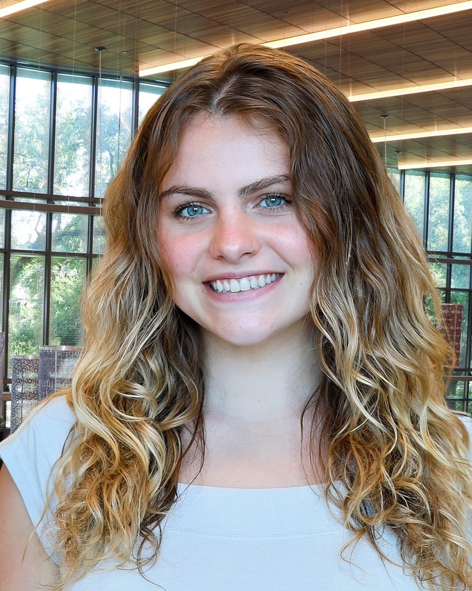

Julia Majchrzak

My name is Julia Majchrzak and I am a designer, artist, and maker passionate about creating products and brand strategies that drive positive environmental and social impact. I am a senior at Tulane University, studying Marketing, Design, and Glassblowing, and will graduate in June 2026.
I thrive in interdisciplinary environments that blend creativity with strategy, and I am eager to contribute my skills in a professional setting. My work spans textiles, glass, jewelry, and painting, reflecting both my versatility and dedication to material innovation. I am especially interested in opportunities that allow me to travel, learn from diverse perspectives, and continue to grow as a designer and creative thinker.